课程目标
目标1：能够使用RestTemplate发送请求
目标2：能够说出SpringCloud的作用
目标3：能够搭建Eureka注册中心
目标4：能够使用Ribbon负载均衡
目标5：能够使用Hystrix熔断器
01、系统架构演变
目标：了解系统架构演变史
随着互联网的发展，网站应用的规模不断扩大。需求的激增，带来的是技术上的压力。系统架构也因此也不断的演进、升级、迭代。从单一应用 一> 垂直拆分应用 一> 分布式服务 一> SOA 一> 微服务架构，还有在Google带领下来势汹涌的Service Mesh。
我们到底是该乘坐微服务的帆船驶向远方，还是偏安一隅，得过且过？ 把握现在，学习现在最火的技术架构；展望未来，争取成为一名优秀的Java工程师。
1.1 单一应用架构
当网站流量很小时，只需一个应用，将所有功能都部署在一起，以减少部署节点和成本。此时，用于简化增删改查工作量的数据访问框架(ORM)是关键。
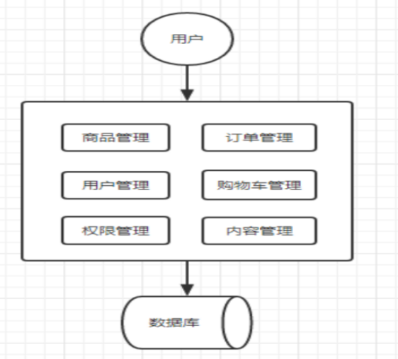
存在的问题：
- 代码耦合度高，开发维护困难
- 无法针对不同模块进行针对性优化
- 无法水平扩展
- 容错性差，并发能力差
1.2 垂直应用架构
当访问量逐渐增大，单一应用增加机器带来的加速度越来越小，将应用拆成互不相干的几个应用，以提升效率。此时，用于加速前端页面开发的Web框架(MVC)是关键。
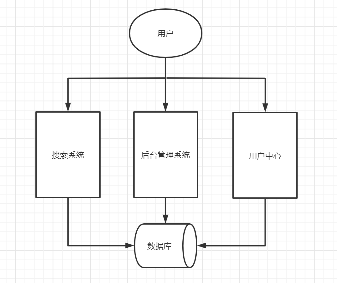
优点：
系统拆分实现了流量分担，解决了并发问题
可以针对不同模块进行优化
方便水平扩展，负载均衡，容错性提高
缺点：
- 系统间相互独立，会有很多重复开发工作，影响开发效率（例如：都需要用到用户认证服务）
1.3 分布式服务架构
当垂直拆分的应用越来越多，可以将核心业务抽取出来，作为独立的服务，逐渐形成稳定的服务中心。此时，用于提高业务复用及整合的分布式服务框架(RPC)是关键。
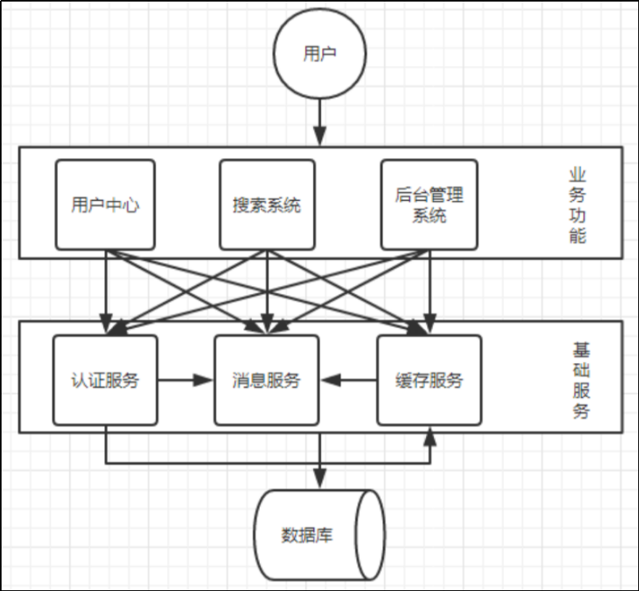
优点：
- 将基础服务进行了抽取，系统间相互调用，提高了代码复用和开发效率
存在的问题：
服务越来越多，需要管理每个服务的地址（例如，A需要调用B、C、D、E四个服务，便需要配置四个服务的地址）
调用关系错综复杂，难以理清依赖关系（上图可见）
服务过多，服务状态难以管理，无法根据服务情况动态管理（例如，A需要调用B，B采用集群，集群有三个服务B1, B2, B3，到底调用哪个服务？怎么负载均衡？如果B1宕机了A怎么知道？）
1.4 面向服务架构(SOA)
当服务越来越多，容量的评估，小服务资源的浪费等问题逐渐显现，此时需增加一个调度中心基于访问压力实时管理集群容量，提高集群利用率。此时，用于提高机器利用率的资源调度和治理中心(SOA：Service-Oriented Architecture)是关键。
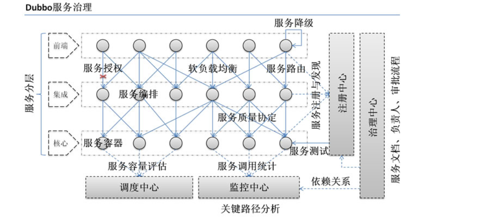
服务治理要做什么？
- 服务注册中心，实现服务自动注册和发现，无需人为记录服务地址
- 服务监控，使得服务调用透明化
- 服务状态监控等
特点：
- 一般而言，采用SOA架构的切分粒度较大
1.5 微服务架构
微服务架构是一种使用一套小服务来开发单个应用的方式或途径，每个服务运行在自己的进程中，并使用轻量级机制通信，通常是RESTFUL API，这些服务基于业务能力构建，并能够通过自动化部署机制来独立部署，这些服务可使用不同的编程语言实现，以及不同数据存储技术，并保持最低限度的集中式管理。
微服务的特点：
- 单一职责：微服务中每一个服务都对应唯一的业务能力，做到单一职责
- 微：微服务的服务拆分粒度很小，例如一个用户管理或部门管理就可以作为一个服务。每个服务虽小，但“五脏俱全”。
- 面向服务：面向服务是说每个服务都要对外暴露Restful（参数是xml或json格式的http接口）风格服务接口API。并不关心服务的技术实现，做到与平台和语言无关，也不限定用什么技术实现，只要提供Restful的接口即可。
- 自治：自治是说服务间互相独立，互不干扰
- 团队独立：每个服务都是一个独立的开发团队，人数不能过多。
- 技术独立：因为是面向服务，提供Restful接口，使用什么技术没有别人干涉
- 数据库分离：每个服务都使用自己的数据源
- 部署独立，服务间虽然有调用，但要做到服务重启不影响其它服务。有利于持续集成和持续交付。每个服务都是独立的组件，可复用，可替换，降低耦合，易维护
微服务架构图：
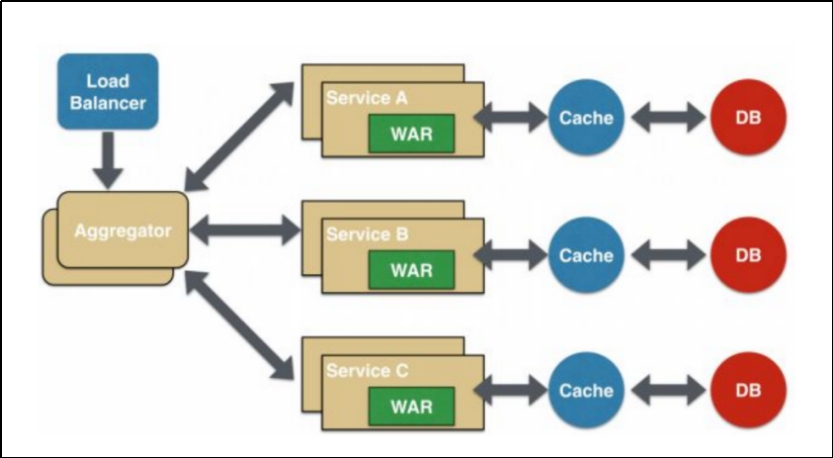
02、远程调用方式介绍
目标：了解几种远程调用方式
2.1 RPC&HTTP
无论是微服务还是SOA，都面临着服务间的远程调用。那么服务间的远程调用方式有哪些呢？
常见的远程调用方式有以下2种：
- RPC：Remote Produce Call远程过程调用，RPC基于Socket（套接字），工作在会话层，可自定义数据格式，早期的webservice，现在热门的dubbo，都是RPC的典型代表 。物理层-数据链路层（帧）-网络层（ip）-传输层（tcp、udp）、会话层（session）、表示层（编码解码）、应用层（http）
- 缺点：服务的提供方和调用方必须采用同一种开发语言
- 优点：速度快，效率高。
- Http：http其实是一种网络传输协议，基于TCP，工作在应用层，规定了数据传输的格式（例如请求头，响应头）。现在浏览器客户端与服务端通信基本都是采用Http协议，也可以用来进行远程服务调用。Rest风格请求就是使用http实现。
- 缺点：1、消息封装臃肿；2、速度相对于RPC慢一点
- 优势：对服务的提供方和调用方没有任何技术限定，自由灵活，更符合微服务理念。
2.2 Http客户端工具
既然微服务选择了Http，那么我们就需要考虑自己来实现对请求和响应的处理。不过开源世界已经有很多的http客户端工具，能够帮助我们做这些事情，例如：
HttpClient (http://hc.apache.org/)
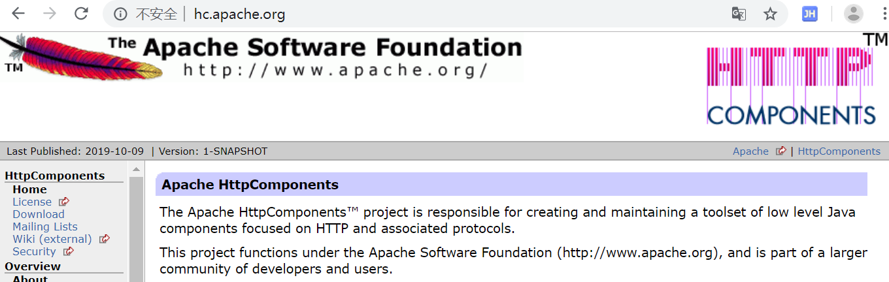
OkHttp (https://square.github.io/okhttp/)
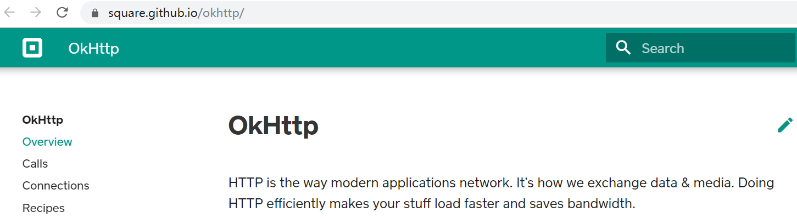
URLConnection (JDK原生)
说明：不同的客户端，API各不相同
2.3 Spring的RestTemplate
spring-web模块提供了一个RestTemplate模板工具类，对基于Http的客户端进行了封装，并且实现了对象与json的序列化和反序列化，非常方便。RestTemplate并没有限定Http的客户端类型，而是进行了抽象，目前常用的3种都有支持：
- HttpClient
- OkHttp
- URLConnection
说明：URLConnection为JDK原生，也是RestTemplate默认的选择。
03、RestTemplate远程调用
目标：学会使用RestTemplate实现远程调用
3.1 实现步骤
第一步：搭建项目(http-demo)
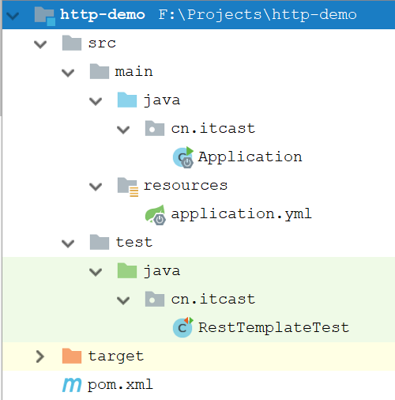
第二步：编写pom.xml
<?xml version="1.0" encoding="UTF-8"?> <project xmlns="http://maven.apache.org/POM/4.0.0" xmlns:xsi="http://www.w3.org/2001/XMLSchema-instance" xsi:schemaLocation="http://maven.apache.org/POM/4.0.0 http://maven.apache.org/xsd/maven-4.0.0.xsd"> <modelVersion>4.0.0</modelVersion> <parent> <groupId>org.springframework.boot</groupId> <artifactId>spring-boot-starter-parent</artifactId> <version>2.1.6.RELEASE</version> </parent> <groupId>cn.itcast</groupId> <artifactId>http-demo</artifactId> <version>1.0-SNAPSHOT</version> <dependencies> <!-- web启动器 --> <dependency> <groupId>org.springframework.boot</groupId> <artifactId>spring-boot-starter-web</artifactId> </dependency> <!-- test启动器 --> <dependency> <groupId>org.springframework.boot</groupId> <artifactId>spring-boot-starter-test</artifactId> <scope>test</scope> </dependency> </dependencies> </project>第三步：编写启动类：cn.itcast.DemoApplication.java
@SpringBootApplication public class DemoApplication { public static void main(String[] args){ SpringApplication.run(DemoApplication.class, args); } @Bean public RestTemplate restTemplate(){ return new RestTemplate(); } }第四步：编写测试类：cn.itcast.RestTemplateTest.java
@RunWith(SpringRunner.class) @SpringBootTest public class RestTemplateTest { @Autowired private RestTemplate restTemplate; /** 发送get请求 */ @Test public void testSendGet() { String content = restTemplate.getForObject("https://www.jd.com", String.class); System.out.println("content = " + content); } /** 发送post请求 */ @Test public void testSendPost() { String content = restTemplate.postForObject("https://www.jd.com", HttpEntity.EMPTY, String.class); System.out.println("content = " + content); } }3.2 小结
get请求：restTemplate.getForObject(“请求url”, “响应数据类型”);
post请求：restTemplate.postForObject(“请求url”,”请求头|请求体”,”响应数据类型”);
说明：如果响应数据为json字符串，响应数据类型可以直接用实体类接收，已经帮我们进行了反序列化
04、SpringCloud介绍
目标：了解springcloud的作用
微服务是一种架构方式，最终肯定需要技术架构去实施。
微服务的实现方式很多，但是最火的莫过于Spring Cloud了。为什么？
- 后台硬：作为Spring家族的一员，有整个Spring全家桶靠山，背景十分强大。
- 技术强：Spring作为Java领域的前辈，可以说是功力深厚。有强力的技术团队支撑。
- 群众基础好：可以说大多数程序员的成长都伴随着Spring框架，试问现在有几家公司开发不用Spring？Spring Cloud与Spring的各个框架无缝整合，对大家来说一切都是熟悉的配方，熟悉的味道。
- 使用方便：相信大家都体会到了SpringBoot给我们开发带来的便利，而Spring Cloud完全支持Spring Boot的开发，用很少的配置就能完成微服务框架的搭建。
4.1 简介
SpringCloud是Spring旗下的项目之一，官网地址：
https://spring.io/projects/spring-cloud
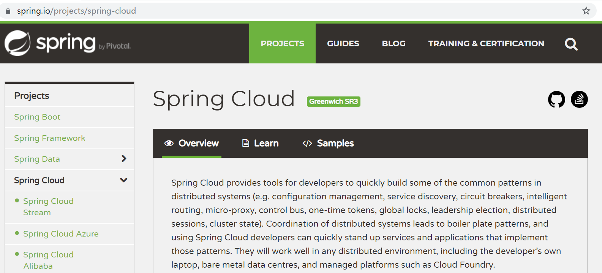
Spring最擅长的就是集成，把世界上最好的框架拿过来，集成到自己的项目中。
Spring Cloud也是一样，它将现在非常流行的一些技术整合到一起，实现了诸如：配置管理，服务注册与发现，智能路由，负载均衡，熔断器，消息总线，集群状态检测等功能；协调分布式环境中各个系统，为各类服务提供模板性配置。其主要涉及的组件包括：
Eureka：注册中心
Zuul、Gateway：服务网关
Ribbon：负载均衡
Feign：服务调用
Hystrix：熔断器
以上只是其中一部分，架构图：
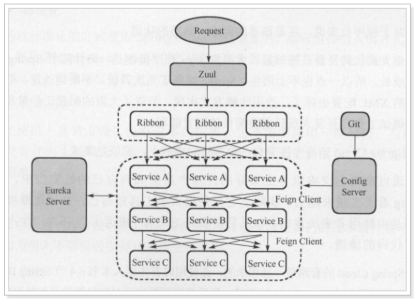
4.2 版本
Spring Cloud的版本命名比较特殊，因为它不是一个组件，而是许多组件的集合，它的命名是以A到Z的为首字母的一些单词（其实是伦敦地铁站的名字）组成：
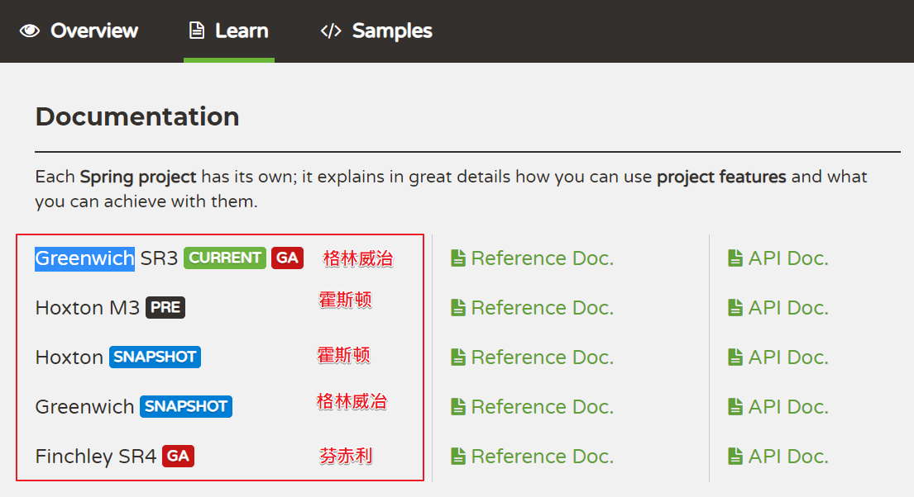
我们在项目中，使用Greenwich版本。Greenwich版本包含的组件，也都有各自的版本，如下表:
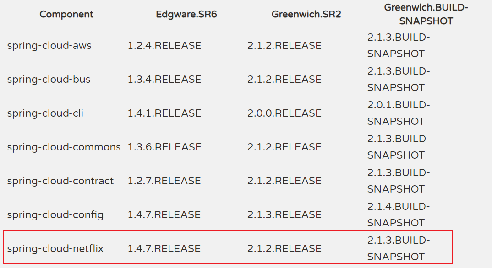
4.3 重要注意事项
springcloud版本和springboot版本有非常严格的对应关系，一旦版本不对应，容易出现各种问题。
查看springCloud对应版本步骤：
1、进入spring官网，进入spring-cloud项目
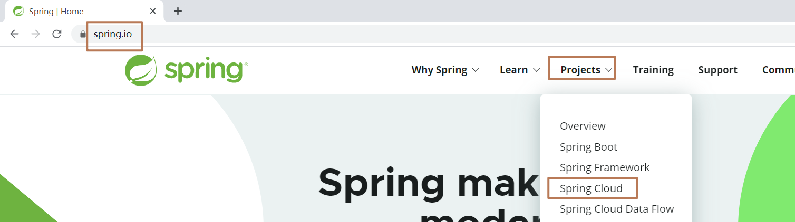
2、选择要使用的springCloud版本的参考文档，本例中使用Greenwich SR6版本
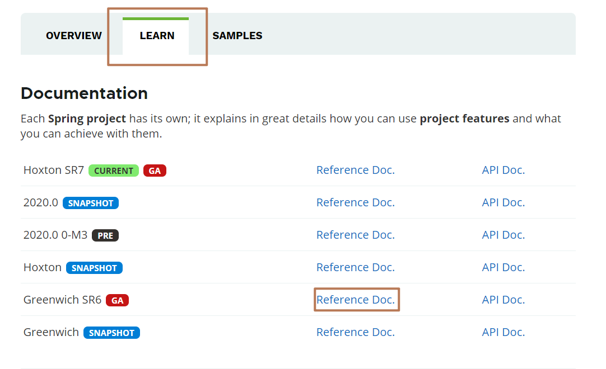
3、选择Single HTML
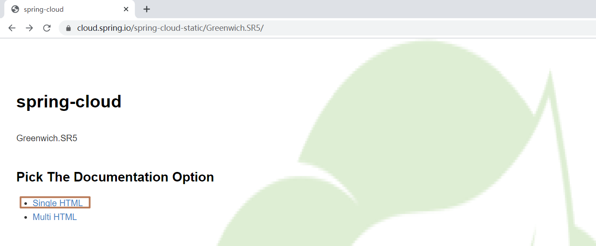
4、搜索spring-boot-starter-parent
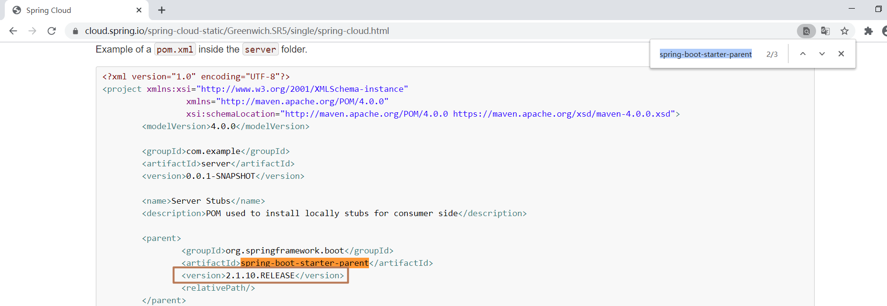
较高版本的参考文档都写明了对应的springboot版本，如HoxTon SR7
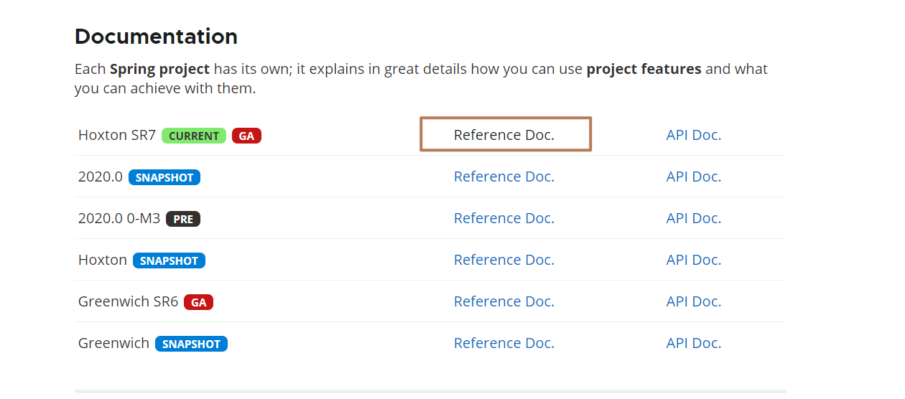
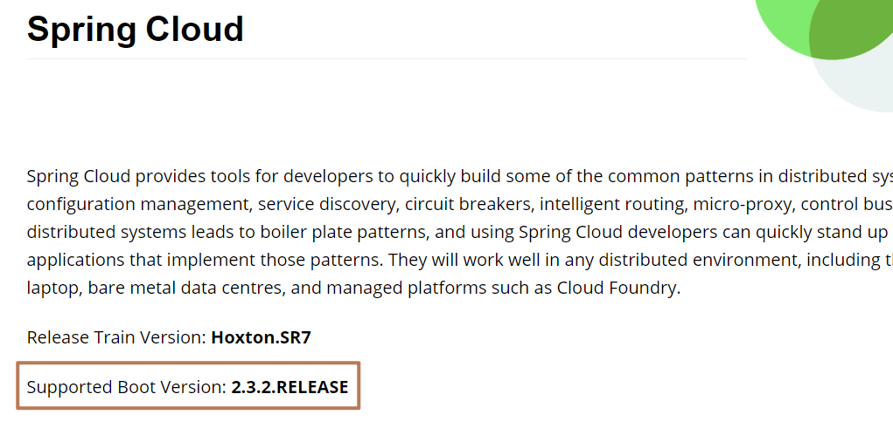
05、模拟微服务调用场景
目标：能够使用spring-boot和RestTemplate模拟微服务场景
5.1 创建父工程
在实际项目中如果存在多个子工程，都会先创建一个父工程，然后后续的工程都以这个工程为父，实现maven的聚合。
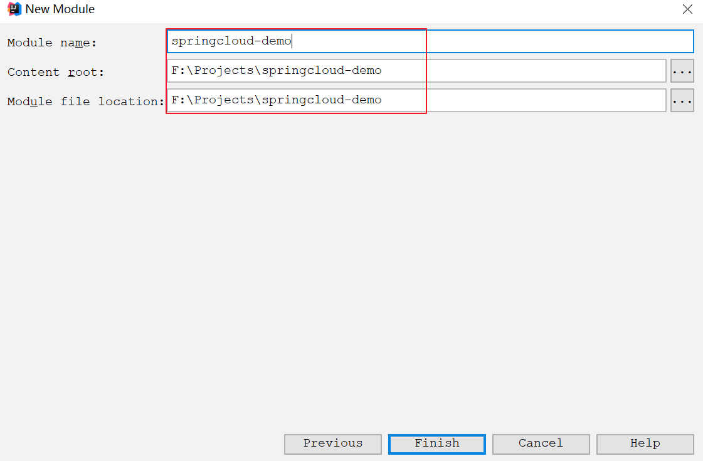
配置pom.xml:
<?xml version="1.0" encoding="UTF-8"?>
<project xmlns="http://maven.apache.org/POM/4.0.0"
xmlns:xsi="http://www.w3.org/2001/XMLSchema-instance"
xsi:schemaLocation="http://maven.apache.org/POM/4.0.0
http://maven.apache.org/xsd/maven-4.0.0.xsd">
<modelVersion>4.0.0</modelVersion>
<groupId>cn.itcast</groupId>
<artifactId>springcloud-demo</artifactId>
<version>1.0-SNAPSHOT</version>
<!-- 配置父级 -->
<parent>
<groupId>org.springframework.boot</groupId>
<artifactId>spring-boot-starter-parent</artifactId>
<version>2.1.6.RELEASE</version>
</parent>
<!-- 配置全局属性 -->
<properties>
<mapper.version>2.1.5</mapper.version>
<mysql.version>5.1.47</mysql.version>
</properties>
<dependencyManagement>
<dependencies>
<!-- 通用mapper启动器 -->
<dependency>
<groupId>tk.mybatis</groupId>
<artifactId>mapper-spring-boot-starter</artifactId>
<version>${mapper.version}</version>
</dependency>
</dependencies>
</dependencyManagement>
<!-- 子工程会继承该依赖 -->
<dependencies>
<dependency>
<groupId>org.projectlombok</groupId>
<artifactId>lombok</artifactId>
</dependency>
</dependencies>
<build>
<plugins>
<!-- 配置spring-boot的maven插件 -->
<plugin>
<groupId>org.springframework.boot</groupId>
<artifactId>spring-boot-maven-plugin</artifactId>
</plugin>
</plugins>
</build>
</project>说明：这里已经对大部分要用到的依赖的版本进行了管理，方便后续使用。
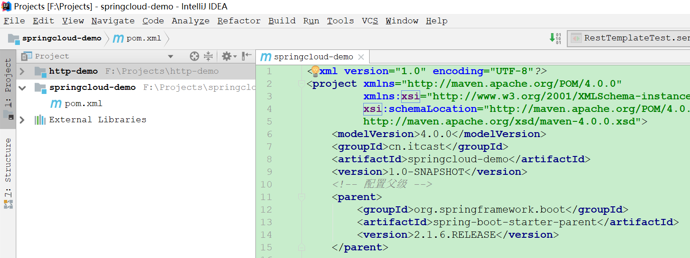
5.2 服务提供者
新建一个子模块user-service，对外提供查询用户的服务。
5.2.1 创建模块
选中父工程：springcloud-demo，创建子模块。
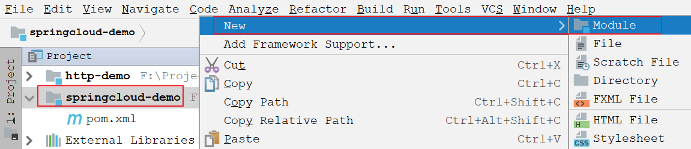
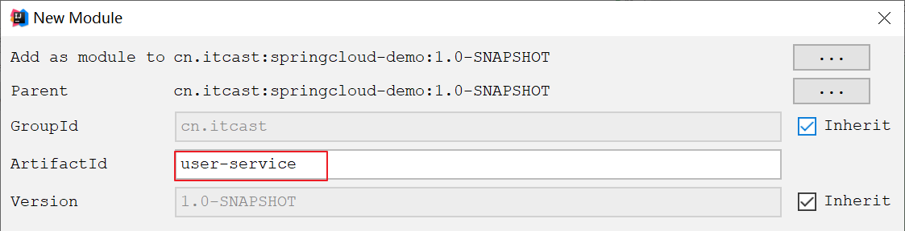
注意: 子模块要在父工程的下级目录
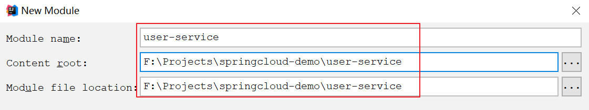
项目结构：
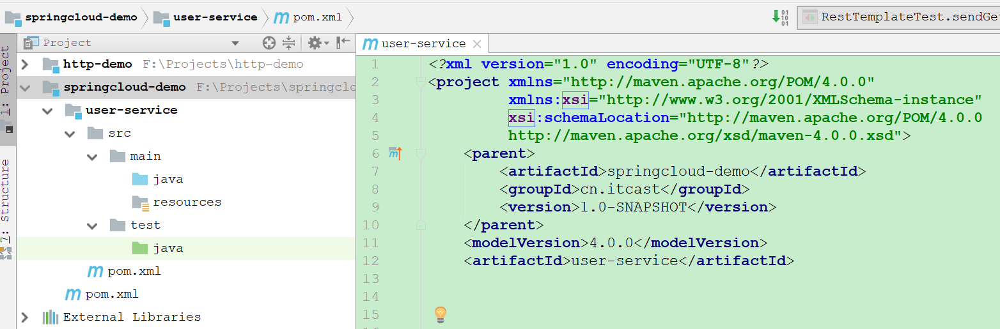
5.2.2 配置依赖
<?xml version="1.0" encoding="UTF-8"?>
<project xmlns="http://maven.apache.org/POM/4.0.0"
xmlns:xsi="http://www.w3.org/2001/XMLSchema-instance"
xsi:schemaLocation="http://maven.apache.org/POM/4.0.0
http://maven.apache.org/xsd/maven-4.0.0.xsd">
<parent>
<artifactId>springcloud-demo</artifactId>
<groupId>cn.itcast</groupId>
<version>1.0-SNAPSHOT</version>
</parent>
<modelVersion>4.0.0</modelVersion>
<artifactId>user-service</artifactId>
<dependencies>
<dependency>
<groupId>org.springframework.boot</groupId>
<artifactId>spring-boot-starter-web</artifactId>
</dependency>
<dependency>
<groupId>tk.mybatis</groupId>
<artifactId>mapper-spring-boot-starter</artifactId>
</dependency>
<dependency>
<groupId>mysql</groupId>
<artifactId>mysql-connector-java</artifactId>
</dependency>
</dependencies>
</project>5.2.3 编写代码
第一步：编写配置文件，这里我们采用了yaml语法(application.yml)
server:
port: 9001
spring:
datasource:
driver-class-name: com.mysql.jdbc.Driver
url: jdbc:mysql://localhost:3306/springcloud
username: root
password: root第二步：使用mysql客户端工具创建 springcloud 数据库，将 资料\tb_user.sql 导入。
第三步：编写启动类
package cn.itcast.user;
import org.springframework.boot.SpringApplication;
import org.springframework.boot.autoconfigure.SpringBootApplication;
import tk.mybatis.spring.annotation.MapperScan;
@SpringBootApplication
@MapperScan("cn.itcast.user.mapper")
public class UserApplication {
public static void main(String[] args){
SpringApplication.run(UserApplication.class, args);
}
}第四步：编写User实体类
package cn.itcast.user.pojo;
import lombok.Data;
import tk.mybatis.mapper.annotation.KeySql;
import javax.persistence.Id;
import javax.persistence.Table;
import java.util.Date;
/** 实体类 */
@Table(name = "tb_user")
@Data
public class User {
@Id
@KeySql(useGeneratedKeys = true)
// 注意一定要使用包装类型，否则查询不到数据
private Long id;
// 账号
private String username;
// 密码
private String password;
// 姓名
private String name;
// 年龄
// 注意一定要使用包装类型，否则返回的结果中该字段为int默认值：0
private Integer age;
// 性别
// 注意一定要使用包装类型，否则返回的结果中该字段为int默认值：0
private Integer sex;
// 生日
private Date birthday;
// 创建日期
private Date created;
// 修改日期
private Date updated;
}第五步：编写UserMapper数据访问层
package cn.itcast.user.mapper;
import cn.itcast.user.pojo.User;
import tk.mybatis.mapper.common.Mapper;
/** 数据访问接口 */
public interface UserMapper extends Mapper<User> {
}第六步：编写UserService业务逻辑层
package cn.itcast.user.service;
import cn.itcast.user.mapper.UserMapper;
import cn.itcast.user.pojo.User;
import org.springframework.beans.factory.annotation.Autowired;
import org.springframework.stereotype.Service;
import org.springframework.transaction.annotation.Transactional;
/** 业务层 */
@Service
@Transactional
public class UserService {
@Autowired(required = false)
private UserMapper userMapper;
/** 根据主键id查询用户 */
public User findOne(Long id){
return userMapper.selectByPrimaryKey(id);
}
}第七步：编写UserController控制层
package cn.itcast.user.controller;
import cn.itcast.user.pojo.User;
import cn.itcast.user.service.UserService;
import org.springframework.beans.factory.annotation.Autowired;
import org.springframework.web.bind.annotation.GetMapping;
import org.springframework.web.bind.annotation.PathVariable;
import org.springframework.web.bind.annotation.RequestMapping;
import org.springframework.web.bind.annotation.RestController;
@RestController
@RequestMapping("/user")
public class UserController {
@Autowired
private UserService userService;
/** 根据主键id查询用户 */
@GetMapping("/{id}")
public User findOne(@PathVariable("id")Long id){
return userService.findOne(id);
}
}项目结构：
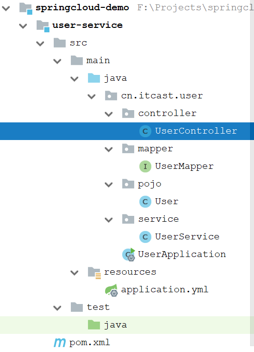
5.2.4 启动测试
启动项目，访问接口：http://localhost:9001/user/1
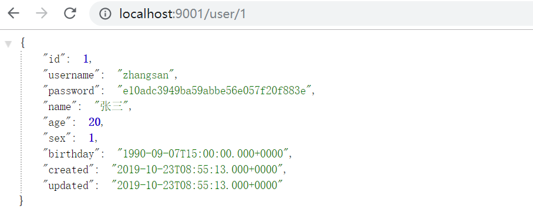
5.3 服务消费者
5.3.1 创建模块
创建user-consumer子模块，与上面类似，这里不再赘述，需要注意的是，我们通过RestTemplate远程调用user-service的功能，因此不需要mapper相关依赖了。
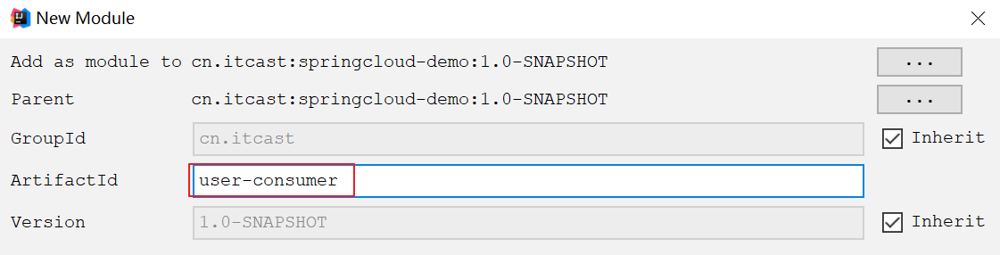
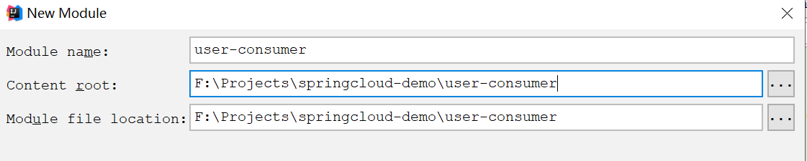
pom.xml:
<?xml version="1.0" encoding="UTF-8"?>
<project xmlns="http://maven.apache.org/POM/4.0.0"
xmlns:xsi="http://www.w3.org/2001/XMLSchema-instance"
xsi:schemaLocation="http://maven.apache.org/POM/4.0.0
http://maven.apache.org/xsd/maven-4.0.0.xsd">
<parent>
<artifactId>springcloud-demo</artifactId>
<groupId>cn.itcast</groupId>
<version>1.0-SNAPSHOT</version>
</parent>
<modelVersion>4.0.0</modelVersion>
<artifactId>user-consumer</artifactId>
<dependencies>
<dependency>
<groupId>org.springframework.boot</groupId>
<artifactId>spring-boot-starter-web</artifactId>
</dependency>
</dependencies>
</project>application.yml
server:
port: 8080 # 端口不能和user-service冲突了模块结构：
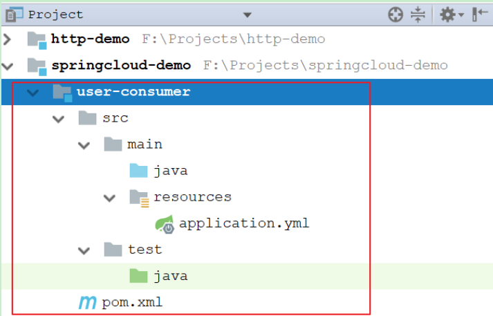
5.3.2 编写代码
第一步：首先在启动类中注册RestTemplate，将其变成一个Bean
package cn.itcast.consumer;
import org.springframework.boot.SpringApplication;
import org.springframework.boot.autoconfigure.SpringBootApplication;
import org.springframework.context.annotation.Bean;
import org.springframework.web.client.RestTemplate;
@SpringBootApplication
public class ConsumerApplication {
public static void main(String[] args){
SpringApplication.run(ConsumerApplication.class, args);
}
@Bean
public RestTemplate restTemplate(){
return new RestTemplate();
}
}第二步：复制user-service中的实体类过来，把不需要的注解通用mapper注解去掉
/** 实体类 */
@Data
public class User {
// 编号
private Long id;
// 账号
private String username;
// 密码
private String password;
// 姓名
private String name;
// 年龄
private Integer age;
// 性别
private Integer sex;
// 生日
private Date birthday;
// 创建日期
private Date created;
// 修改日期
private Date updated;
}第三步：编写controller，在controller中注入RestTemplate，远程访问user-service的服务接口
package cn.itcast.consumer.controller;
import cn.itcast.consumer.pojo.User;
import org.springframework.beans.factory.annotation.Autowired;
import org.springframework.web.bind.annotation.GetMapping;
import org.springframework.web.bind.annotation.PathVariable;
import org.springframework.web.bind.annotation.RequestMapping;
import org.springframework.web.bind.annotation.RestController;
import org.springframework.web.client.RestTemplate;
@RestController
@RequestMapping("/consumer")
public class ConsumerController {
@Autowired
private RestTemplate restTemplate;
/** 根据主键id查询用户 */
@GetMapping("/{id}")
public User findOne(@PathVariable("id")Long id){
String url = "http://localhost:9001/user/" + id;
return restTemplate.getForObject(url, User.class);
}
}项目结构：
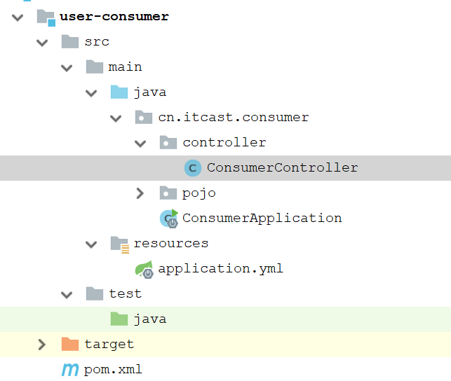
5.3.3 启动测试
访问：http://localhost:8080/consumer/1
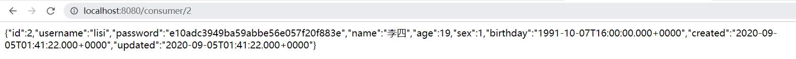
5.4 存在问题分析
简单回顾一下，刚才我们写了什么:
user-service：对外提供了查询用户的接口
user-consumer：通过RestTemplate访问 http://localhost:9001/user/{id}接口查询用户数据
存在什么问题:
- user-consumer中，我们把url地址硬编码到了代码中，不方便后期维护
- user-consumer中，我们需要记忆user-service的地址，如果出现变更，可能得不到通知，地址将失效
- user-consumer不清楚user-service的状态，服务宕机也不知道
- user-service只有1台服务，不具备高可用性
- 即便user-service形成集群，user-consumer还需自己实现负载均衡
其实上面说的问题，概括一下就是分布式服务架构必然要面临的问题：
- 服务管理
- 如何自动注册和发现
- 如何实现状态监管
- 如何实现动态路由
- 服务如何实现负载均衡
- 服务如何解决容灾问题
- 服务如何实现统一配置
说明：以上的问题，都将在SpringCloud中得到答案。
06、Eureka介绍
6.1 初识Eureka
首先我们来解决第一个问题，服务的管理。
问题分析
在刚才的案例中，user-service对外提供服务，需要对外暴露自己的地址。而user-consumer（消费者）需要记录服务提供者的地址。将来地址出现变更，还需要及时更新。这在服务较少的时候并不觉得有什么，但是在日益复杂的互联网环境，一个项目肯定会拆分出十几，甚至数十个微服务。此时如果还人为管理地址，不仅开发困难，将来测试、发布上线都会非常麻烦，这与DevOps的思想是背道而驰的。
滴滴出行
网约车出现以前，人们出门打车只能叫出租车。一些私家车主想做出租司机却没有资格，被称为黑车。而很多人想要约车，但是无奈出租车太少，不方便。私家车很多却不敢拦，而且满大街的车，谁知道哪个才是愿意载人的。一个想要，一个愿意给，就是缺少引子，缺乏管理啊。
后来类似于滴滴这样的网约车平台出现了，所有想载客的私家车全部到滴滴注册，记录你的车型（服务类型），身份信息（联系方式）。这样提供服务的私家车，在滴滴那里都能找到，一目了然。
此时要叫车的人，只需要打开APP，输入你的目的地，选择车型（服务类型），滴滴自动安排一个符合需求的车到你面前，为你服务，完美！
Eureka做什么？
Eureka就好比是滴滴，负责管理、记录服务提供者的信息。服务调用者无需自己寻找服务，而是把自己的需求告诉Eureka，然后Eureka会把符合你需求的服务告诉你。
同时，服务提供方与Eureka之间通过 “心跳” 机制进行监控，当某个服务提供方出现问题，Eureka自然会把它从服务列表中剔除。
这就实现了服务管理的自动注册与发现、状态监控。
6.2 原理图
基本架构
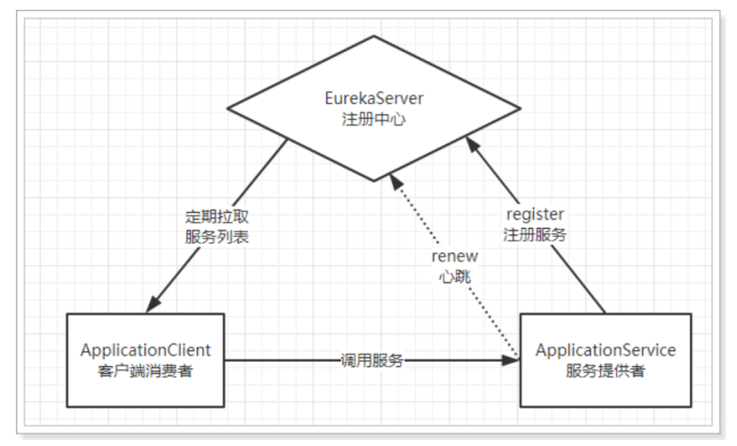
- EurekaServer：就是服务注册中心（可以是一个集群），对外暴露自己的地址
- 提供者：启动后向Eureka注册自己的服务信息（ip、端口、微服务名）
- 消费者：向Eureka订阅服务，服务启动时会拉取一次服务列表，并且通过定时任务定期更新服务列表
- 心跳(续约)：提供者定期通过发送http请求至Eureka的方式刷新自己的状态
注意：
1、Eureka分两个部分： EurekaServer服务端 + EurekaClient客户端(服务提供者或服务消费者)
2、服务注册、服务心跳续约、服务拉取等都是通过调用eurekaServer的http接口实现
07、Eureka服务端：注册中心
目标：搭建eureka-server模块，作为注册中心。
7.1 实现步骤
第一步：修改父工程springcloud-demo的pom文件，添加spring-cloud依赖配置，这点和加入springBoot父工程作用类似，此依赖中加入了许多依赖包的限定。
<properties> <mapper.verion>2.1.5</mapper.verion> <springcloud.version>Greenwich.SR2</springcloud.version> <!--修改mysql版本，默认是8.X.X--> <mysql.version>5.1.47</mysql.version> </properties> <dependencyManagement> <dependencies> <!-- spring-cloud (导入pom文件) scope: import 只能在<dependencyManagement>元素里面配置 --> <dependency> <groupId>org.springframework.cloud</groupId> <artifactId>spring-cloud-dependencies</artifactId> <version>${springcloud.version}</version> <type>pom</type> <scope>import</scope> </dependency> <!-- 通用mapper启动器 --> <dependency> <groupId>tk.mybatis</groupId> <artifactId>mapper-spring-boot-starter</artifactId> <version>${mapper.version}</version> </dependency> </dependencies> </dependencyManagement>
第二步：创建模块: eureka-server
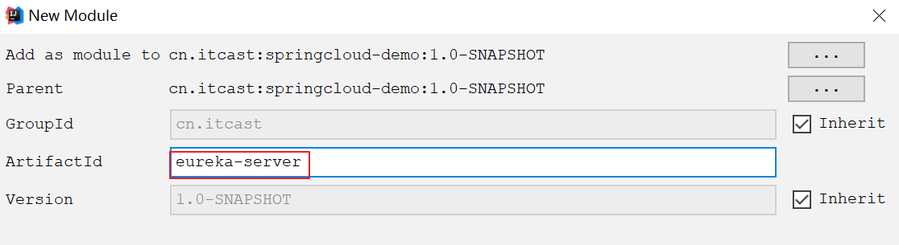
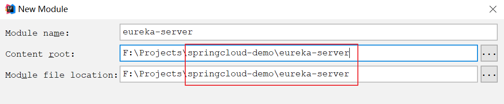
第三步：配置eureka-server依赖: pom.xml
<?xml version="1.0" encoding="UTF-8"?> <project xmlns="http://maven.apache.org/POM/4.0.0" xmlns:xsi="http://www.w3.org/2001/XMLSchema-instance" xsi:schemaLocation="http://maven.apache.org/POM/4.0.0 http://maven.apache.org/xsd/maven-4.0.0.xsd"> <parent> <artifactId>springcloud-demo</artifactId> <groupId>cn.itcast</groupId> <version>1.0-SNAPSHOT</version> </parent> <modelVersion>4.0.0</modelVersion> <artifactId>eureka-server</artifactId> <dependencies> <!-- 配置eureka服务端启动器(集成了web启动器) --> <dependency> <groupId>org.springframework.cloud</groupId> <artifactId>spring-cloud-starter-netflix-eureka-server</artifactId> </dependency> </dependencies> </project>第四步：编写启动类 : EurekaServerApplication
package cn.itcast; import org.springframework.boot.SpringApplication; import org.springframework.boot.autoconfigure.SpringBootApplication; import org.springframework.cloud.netflix.eureka.server.EnableEurekaServer; @EnableEurekaServer // 声明当前应用为eureka服务(启用eureka服务) @SpringBootApplication public class EurekaServerApplication { public static void main(String[] args){ SpringApplication.run(EurekaServerApplication.class, args); } }第五步：编写配置文件： application.yml，这里要注意一点是eureka-server本身也是一个客户端（与高可用有关，后续章节会讲到），所以也需要配置服务端的地址，目前服务端就是自己，因此配置自己的地址即可。
server: port: 8761 # eureka服务端，默认端口 spring: application: name: eureka-server # 应用名称，会在Eureka中作为服务的id标识（serviceId） eureka: client: service-url: # Eureka服务的地址，现在是自己的地址，如果集群，需要写其它服务的地址。 defaultZone: http://localhost:8761/eureka fetch-registry: false # 不拉取服务 设置为true的时候，启动会报错。因为单个注册中心，在拉取服务的时候在server还没有彻底启动之前 register-with-eureka: false # 不注册服务 单个server注册没有意义，只提供给别人注册，没有提供给别人调用第六步：启动服务，并访问：http://127.0.0.1:8761
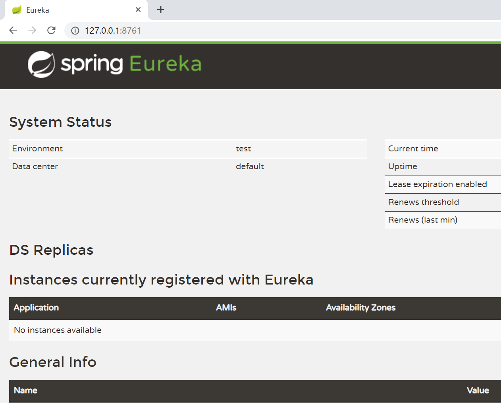
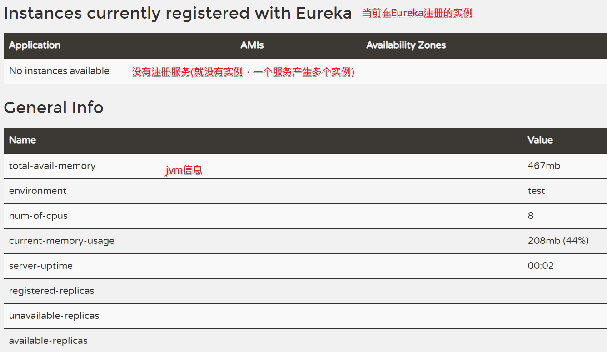
7.2 小结
Eureka服务端开发三要素：
添加eureka服务端启动器
添加eureka服务端注解
添加eureka客户端配置，指定server地址
08、Eureka客户端：服务注册
目标：实现user-service服务注册到eurekaServer中。(客户端注册到服务端)
8.1 实现步骤
第一步：在user-service模块中添加eureka客户端启动器依赖
<!-- 配置eureka客户端启动器 --> <dependency> <groupId>org.springframework.cloud</groupId> <artifactId>spring-cloud-starter-netflix-eureka-client</artifactId> </dependency>第二步：在启动类上开启Eureka客户端，添加 @EnableDiscoveryClient 来开启Eureka客户端
@SpringBootApplication @MapperScan("cn.itcast.user.mapper") @EnableDiscoveryClient // 开启Eureka客户端（2.1.x版本不加也行） public class UserApplication { public static void main(String[] args){ SpringApplication.run(UserApplication.class, args); } }第三步：修改application.yml，添加eureka客户端配置
server: port: 9001 spring: datasource: driver-class-name: com.mysql.jdbc.Driver url: jdbc:mysql://localhost:3306/springcloud username: root password: root application: # 应用名称(服务id) name: user-service # 配置eureka服务端地址 eureka: client: service-url: defaultZone: http://localhost:8761/eureka注意：这里我们添加了spring.application.name属性来指定应用名称，将来会作为服务的id使用。
第四步：重启项目，访问Eureka监控页面查看:
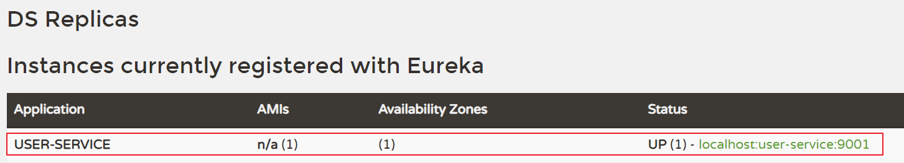
说明：我们发现user-service服务已经注册成功了。
8.2 小结
Eureka客户端开发三要素
eureka客户端启动器
eureka客户端注解
eureka客户端配置，指定server地址
09、Eureka客户端：服务发现
目标：实现user-consumer消费者从eurekaServer中发现服务。(通过服务id发现服务)
9.1 实现步骤
第一步：在user-consumer模块中添加eureka客户端启动器依赖
<!-- 配置eureka客户端启动器 --> <dependency> <groupId>org.springframework.cloud</groupId> <artifactId>spring-cloud-starter-netflix-eureka-client</artifactId> </dependency>第二步：在启动类上开启Eureka客户端，添加 @EnableDiscoveryClient 来开启Eureka客户端
package cn.itcast.consumer; import org.springframework.boot.SpringApplication; import org.springframework.boot.autoconfigure.SpringBootApplication; import org.springframework.cloud.client.discovery.EnableDiscoveryClient; import org.springframework.context.annotation.Bean; import org.springframework.web.client.RestTemplate; @SpringBootApplication @EnableDiscoveryClient // 开启Eureka客户端 public class ConsumerApplication { public static void main(String[] args){ SpringApplication.run(ConsumerApplication.class, args); } @Bean public RestTemplate restTemplate(){ return new RestTemplate(); } }第三步：修改application.yml，添加eureka客户端配置
server: port: 8080 spring: application: name: user-consumer # 应用名称 eureka: client: service-url: # eurekaServer地址 defaultZone: http://localhost:8761/eureka第四步：修改Controller代码
package cn.itcast.consumer.controller; import cn.itcast.consumer.pojo.User; import org.springframework.beans.factory.annotation.Autowired; import org.springframework.cloud.client.ServiceInstance; import org.springframework.cloud.client.discovery.DiscoveryClient; import org.springframework.web.bind.annotation.GetMapping; import org.springframework.web.bind.annotation.PathVariable; import org.springframework.web.bind.annotation.RequestMapping; import org.springframework.web.bind.annotation.RestController; import org.springframework.web.client.RestTemplate; import java.util.List; @RestController @RequestMapping("/consumer") public class ConsumerController { /** 注入发现者 */ @Autowired private DiscoveryClient discoveryClient; @Autowired private RestTemplate restTemplate; /** 根据主键id查询用户 */ @GetMapping("/{id}") public User findOne(@PathVariable("id")Long id){ // 根据服务id获取该服务的全部服务实例 List<ServiceInstance> instances = discoveryClient .getInstances("user-service"); // 获取第一个服务实例(因为目前我们只有一个服务实例) ServiceInstance serviceInstance = instances.get(0); // 获取服务实例所在的主机 String host = serviceInstance.getHost(); // 获取服务实例所在的端口 int port = serviceInstance.getPort(); // 定义服务实例访问URL String url = "http://" + host + ":" + port + "/user/" + id; System.out.println("服务实例访问URL: " + url); return restTemplate.getForObject(url, User.class); } }第五步：访问consumer，可以发现依旧可以访问成功
9.2 小结
Eureka客户端开发三要素（同提供者）
- eureka客户端启动器
- eureka客户端注解
- eureka客户端配置，指定server地址
说明：服务注册与服务发现都属于Eureka客户端，只是我们人为的把Eureka客户端分成了服务提供端与服务消费端两个角色。**实际上Eureka只有服务端(注册中心) 与 客户端(服务注册或服务发现)**。
10、Eureka服务端：高可用
10.1 高可用介绍
Eureka Server即服务的注册中心，在刚才的案例中，我们只有一个EurekaServer，事实上EurekaServer也可以是一个集群，形成高可用的Eureka注册中心。
服务同步
当存在多个Eureka Server节点时，每个节点都配置其他节点的地址，当服务提供者注册到Eureka Server集群中的某个节点时，该节点会把服务的服务注册请求转发到集群中的其他节点，从而实现数据同步。因此，无论客户端访问到Eureka Server集群中的任意一个节点，都可以获取到完整的服务列表信息。
而作为客户端，需要把信息注册到每个Eureka中：
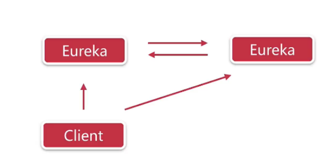
如果有三个EurekaServer节点，则每一个节点都需指定其他节点的地址，例如：有三个节点端口分别为8761、8762、8763，则：
- 8761节点的配置中指定8762和8763的地址
- 8762节点的配置中指定8761和8763的地址
- 8763节点的配置中指定8761和8762的地址
说明：
1、不仅仅是注册服务，心跳续约、服务下线等其他请求也会转发到其他节点。
2、若某服务A服务注册的时候，收到注册请求的节点（server1）转发请求到其他节点（server2）失败（例如网络波动），等到服务A进行心跳续约的时候，server1收到心跳续约请求，并转发到server2，server2若发现该服务A在自己缓存中不存在，就会把该服务注册到自己。
3、若某服务A服务注册的时候，收到注册请求的节点（server1）转发请求到其他节点（server2），发现server2不可用，连接不上，此时server1内部有一个批处理流（相当于一个定时任务），会保存本次转发失败的请求，每隔1s钟重试一次，这样等server2节点恢复了，就可以收到该注册请求了，实现最终数据一致性。
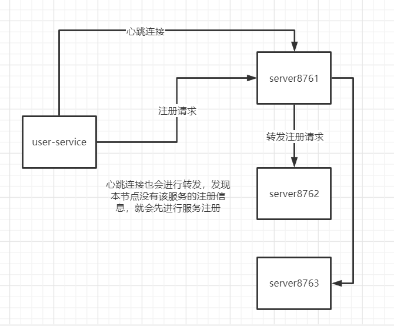
10.2 高可用配置
我们假设要搭建两个EurekaServer的集群，端口分别为：8761和8762
10.2.1 实现步骤
第一步：修改eureka-server的配置(application.yml)
server: port: ${port:8761} # eureka服务端，默认端口 spring: application: name: eureka-server # 应用名称，会在Eureka中作为服务的id标识（serviceId） eureka: client: service-url: # Eureka服务地址；如果是集群则是其它服务地址，后面要加/eureka defaultZone: ${defaultZone:http://localhost:8761/eureka} fetch-registry: true # 拉取服务 register-with-eureka: true # 注册服务说明：
1、在上述配置文件中的${}表示在jvm启动时候若能找到对应port或者defaultZone参数则使用传入的参数，若无则使用冒号后面的默认值。
2、把service-url的值改成了其他EurekaServer的地址，而不是自己。
2、fetch-registry和register-with-eureka最好是都设置为true，这样server在启动的时候，会去service-url中配置的其他节点
中拉取已有的服务列表。
第二步：每一台在启动的时候指定端口port和defaultZone配置
8761节点配置：
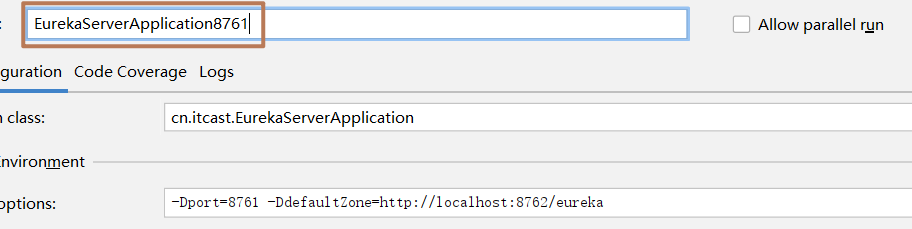
8762节点配置
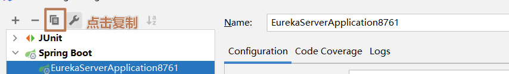
修改复制后的配置
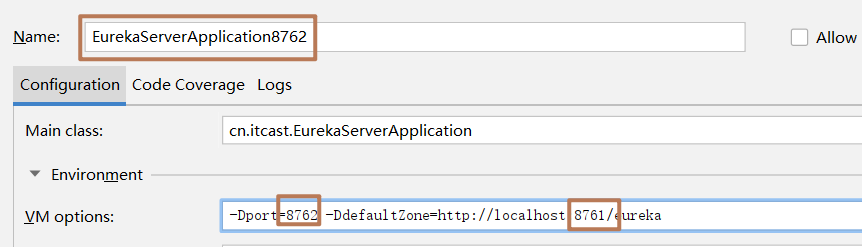
第三步：依次启动8761、8762节点，浏览器访问8761或8762：
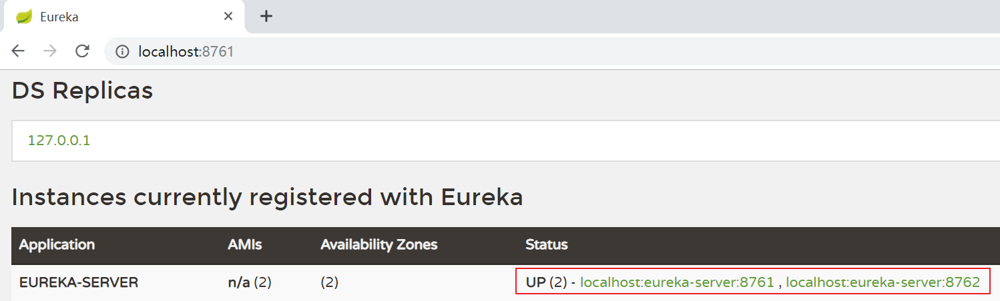
第四步：eureka客户端修改配置，由于此时EurekaServer节点不止一个，因此user-service注册服务或者user-consumer获取服务的时候，service-url参数需要变化，这样即使某个节点不可用了，也可以使用其他的节点，实现高可用。
# 配置eureka eureka: client: service-url: # EurekaServer地址,多个地址以','隔开 defaultZone: http://localhost:8761/eureka,http://localhost:8762/eureka
11、Eureka客户端：服务提供者的其他配置
服务提供者要向EurekaServer注册服务，并且完成服务续约等工作。
服务注册
服务提供者在启动时，会检测配置属性中的： eureka.client.register-with-eureka=true 参数是否正确，事实上默认就是true。如果值确实为true，则会在启动时向EurekaServer发起一个restful风格的http请求，并携带自己的元数据信息，Eureka Server会把这些信息保存到一个双层Map结构中。
第一层Map的Key就是服务id，一般是配置中的 spring.application.name 属性
第二层Map的key是服务的实例id。一般host+ serviceId + port，例如：localhost:user-service:9001
值则是服务的实例对象，也就是说一个服务，可以同时启动多个不同实例，形成集群。
Map<String, Map<String, instance>> allMap;
Map<String, instance> instanceMap;
instanceMap.put(“localhost:userService:9001“, instance);
instanceMap.put(“localhost:userService:9002“, instance);
allMap.put(“userService”, instanceMap);
服务注册时默认使用的是主机名，如果想用ip进行注册，可以在user-service中添加配置：
# 配置eureka
eureka:
instance:
ip-address: 127.0.0.1 # ip地址
prefer-ip-address: true # 更倾向于使用ip，而不是host名称修改完后先后重启user-service和user-consumer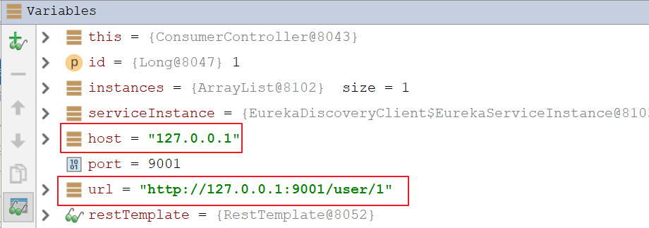
服务续约
在注册服务完成以后，服务提供者会维持一个心跳（定时向EurekaServer发起Rest请求），告诉EurekaServer：“我还活着”。这个我们称为服务的续约（renew）
有两个重要参数可以修改服务续约的行为：
# 配置eureka
eureka:
instance:
lease-renewal-interval-in-seconds: 30 # 服务续约(renew)的间隔时间，默认为30秒
lease-expiration-duration-in-seconds: 90 # 服务失效时间，默认值90秒 - lease-renewal-interval-in-seconds：服务续约(renew)的间隔时间，默认为30秒
- lease-expiration-duration-in-seconds：服务失效时间，默认值90秒
也就是说，默认情况下每个30秒服务会向注册中心发送一次心跳，证明自己还活着。如果超过90秒没有发送心跳，EurekaServer就会认为该服务宕机，会从服务列表中剔除，这两个值在生产环境不要修改，默认即可。
12、Eureka客户端：服务消费者的其他配置
获取服务列表
当服务消费者启动时，会检测 eureka.client.fetch-registry=true 参数的值，如果为true，则会从Eureka Server服务的列表拉取下来，然后缓存在本地。并且 每隔30秒 会重新获取并更新数据。可以通过下面的参数来修改：
eureka:
client:
registry-fetch-interval-seconds: 30 # 获取服务间隔时间(默认30秒)13、Eureka服务端：失效剔除及自我保护
服务下线
当人工发送服务下线的REST请求给Eureka Server或debug模式下关闭服务，告诉服务注册中心：“我要下线了”。服务中心接受到请求之后，将该服务置为下线状态，也就是从服务列表中剔除。
失效剔除
当我们的服务由于内存溢出或网络故障等原因使得服务不可用，亦或是正常关闭服务，此时服务注册中心并未收到“服务下线”的请求。服务注册中心在启动时会创建一个定时任务，每隔一段时间（默认为60秒）判断一次，将当前服务列表中超过（默认为90秒）没有续约的服务剔除，这个操作被称为失效剔除。
可以通过以下参数对其进行修改，单位是毫秒。 最长多久时间检测到并剔除：90 + 60 = 150
eureka.server.eviction-interval-timer-in-ms: 60000 # eureka-server 服务剔除定时任务执行周期（毫秒）测试失效剔除步骤：
修改eureka-server配置：
eureka: client: service-url: defaultZone : ${defaultZone:http://localhost:8761/eureka/} fetch-registry: false # 自己不拉取服务 register-with-eureka: false # 自己不注册服务 server: eviction-interval-timer-in-ms: 4000 # 设置4s执行一次检测定时任务 enable-self-preservation: false # 关闭自我保护机制修改user-service配置：
eureka: client: service-url: #配置eureka server 服务地址 defaultZone: http://localhost:8761/eureka/ fetch-registry: false # 拉取服务 register-with-eureka: true # 注册服务 instance: prefer-ip-address: true # 指定更偏向用ip ip-address: 127.0.0.1 lease-renewal-interval-in-seconds: 5 # 5s发送一次心跳续约 lease-expiration-duration-in-seconds: 15 # 15s未发送心跳续约就失效启动eureka-server和user-service，然后再关闭user-service
那么最迟15 + 4 = 19s + 15（eureka服务剔除多加了一个失效时间）左右可以在注册中心控制台界面看到user-service服务剔除效果。
自我保护
我们同时关停多个注册的服务，可能在Eureka面板看到如下一条警告，这是触发了Eureka的自我保护机制。
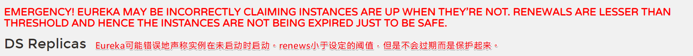
在生产环境下，因为网络延迟等原因，未收到的心跳续约数量非常多，超标了，但是此时就把服务剔除列表并不妥当，因为服务可能没有宕机。Eureka在这段时间内不会剔除任何服务实例（否则服务其实是好的，岂不是误杀了），直到网络恢复正常。生产环境下这很有效，保证了大多数服务依然可用，不过也有可能获取到失败的服务实例，因此服务调用者必须做好服务的失败容错。
自我保护检查周期：默认每分钟检查一次（网上绝大多数文章都是错的！！！）
计算公式：最后一分钟实际受到的客户端实例心跳续约数（Renews ） < （每分钟应该受到心跳续约的总数 * 85%） = Renews threshold
Renews threshold：*Eureka Server 期望每分钟收到客户端实例续约的总数 85%。Renews (last min)：Eureka Server 最后 1 分钟实际收到客户端实例续约的总数。若启动两个实例，通过计算可得出：
每分钟应发心跳续约总数：2 * 60/30 = 4 （2为服务实例个数、一分钟60s、每个实例每30s发送一次心跳续约）
可得出：阈值 = 4 * 85 % = 3.4，结果会取4 ，因此，如果上一分钟收到的心跳续约数< 4 便于触发自我保护
实例：一个端口就是一个实例，例如user-service:9001 就是一个实例，也叫结点
集群：一个user-service就是一个集群，一个结点也是一个集群
自我保护检查中的实例格式数指所有的实例，只要在eureka注册中心看到的所有实例，就是需要参与计算的实例个数，包括eureka-server本身
可以通过下面的配置来关闭自我保护：
eureka:
server:
enable-self-preservation: false # 关闭自我保护模式（缺省为打开）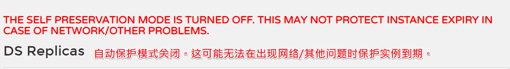
14、Ribbon负载均衡
目标：使用Ribbon实现服务实例负载均衡
在刚才的案例中，我们启动了一个user-service，然后通过DiscoveryClient来获取服务实例信息，然后获取ip和端口来访问。 但是实际环境中，往往会开启很多个user-service的集群。此时获取的服务列表中就会有多个，到底该访问哪一个呢？一般这种情况下就需要编写负载均衡算法，在多个实例中进行选择。不过Eureka中已经集成了负载均衡组件—Ribbon，简单修改代码即可使用。
什么是Ribbon?
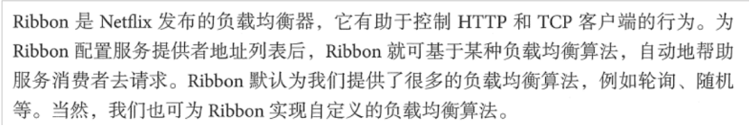
14.1 操作步骤
第一步：启动两个服务实例(user-service)，一个9001，一个9002。
修改user-service的配置文件如下：
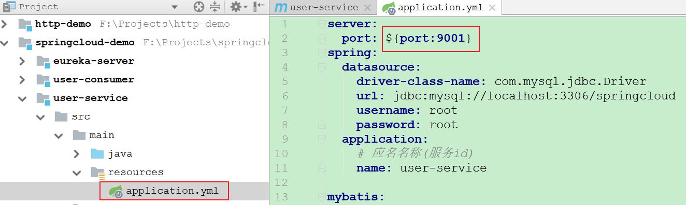
修改运行配置：
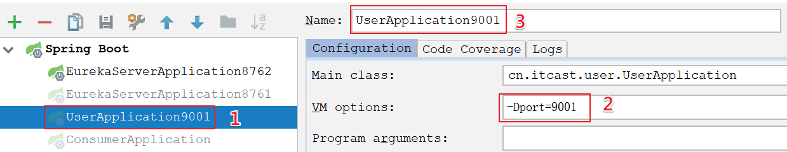
复制一份配置（9002的配置）
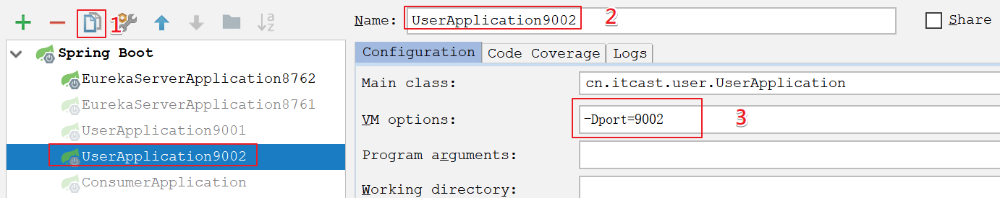
分别启动两个实例
访问Eureka控制台：
第二步：开启负载均衡(user-consumer)
因为eureka-client启动器中已经传递依赖了Ribbon，所以我们无需引入新的依赖，直接修改代码：
在RestTemplate的配置方法上添加 @LoadBalanced 注解：
@Bean @LoadBalanced public RestTemplate restTemplate(){ return new RestTemplate(); }第三步：修改ConsumerController调用方式，不再手动获取ip和端口，而是直接通过服务名称调用：
/** 根据主键id查询用户 */ @GetMapping("/{id}") public String findOne(@PathVariable("id")Long id){ /*// 根据服务id获取该服务的全部服务实例 List<ServiceInstance> instances = discoveryClient .getInstances("user-service"); // 获取第一个服务实例(因为目前我们只有一个服务实例) ServiceInstance serviceInstance = instances.get(0); // 获取服务实例所在的主机 String host = serviceInstance.getHost(); // 获取服务实例所在的端口 int port = serviceInstance.getPort(); // 定义服务实例访问URL String url = "http://" + host + ":" + port + "/user/" + id;*/ // 定义服务实例访问URL String url = "http://user-service/user/" + id; return restTemplate.getForObject(url, String.class); }第四步：查看负载均衡效果，修改user-service模块的application.yml文件，增加日志的输出：
第五步：访问user-consumer，发现可以正常访问，并可以在9001和9002的控制台查看日志输出情况，你会发现 9001与9002 轮询访问
了解：Ribbon默认的负载均衡策略是轮询(com.netflix.loadbalancer.RoundRobinRule)
若要修改负载均衡策略，可以在user-consumer的配置文件中添加如下配置，便切换为随机策略
# 格式：{服务名称}.ribbon.NFLoadBalancerRuleClassName user-service: ribbon: NFLoadBalancerRuleClassName: com.netflix.loadbalancer.RandomRuleRibbon负载均衡策略类都实现了IRule接口：
此外，为什么RestTemplate调用的时候，只需要指定serviceId就可以访问了呢？ 显然是有组件根据serviceId，获取到了服务实例的ip和端口，它就是LoadBalancerInterceptor，这个类会对RestTemplate的请求进行拦截，然后根据从eureka-server拉取的服务列表，根据serviceId获取节点信息，随后利用负载均衡算法得到真实的服务地址信息，替换serviceId。负载均衡原理流程图：
14.2 小结
RestTemplate上添加负载均衡注解: @LoadBalanced
RestTemplate调用服务时，使用服务id
15、Hystrix熔断器：简介及作用
目标：理解Hystrix的作用
介绍：Hystrix，英文意思是豪猪，全身是刺，看起来就不好惹，是一种保护机制。 是Netflix公司的一款组件。
源码访问地址：https://github.com/Netflix/Hystrix
那么Hystrix的作用是什么呢？具体要保护什么呢？
Hystrix是Netflix开源的一个延迟和容错库，用于隔离访问远程服务、第三方库，防止出现级联失败。
- 作用：防止雪崩
什么是雪崩问题？
一个微服务中，可能会对外提供多个HTTP接口，以下每个Dependency当成一个HTTP接口：

如果此时，某个HTTP接口出现异常（调用超时）例如：下图中的Dependency I：

假如HTTP接口 I 发生异常，请求阻塞，用户不会得到响应，则tomcat的这个线程不会释放，于是越来越多的用户请求到来，越来越多的线程会阻塞。

服务器支持的线程数是有限的（tomcat默认200个线程），若请求一直阻塞，会导致服务器资源耗尽，从而导致所有其它HTTP接口都不可用，并且假如有其他的微服务需要调用这个接口，岂不是也跟着阻塞，也拖累了其他的微服务所在服务器也资源耗尽？这就叫做雪崩效应。
这就好比银行的柜台窗口，假如现在有10个窗口，每个窗口理解成一个线程，每个窗口都可以办理各种业务（例如存钱、取钱、贷款）。这个时候1个客户需要办理贷款业务，耗费时间很久，一直占用一个窗口。后面又来了9个客户也做贷款，也各自占用了一个窗口，那10个窗口岂不是都不能处理其他业务了？
Hystrix解决雪崩问题的手段主要是服务降级，包括：
- 线程隔离
- 服务熔断（断路器）
16、Hystrix熔断器：线程隔离原理
线程隔离示意图：

- Hystrix为每个依赖服务调用分配一个小的线程池（默认10个线程），如果线程池已满调用将被立即拒绝，默认不采用排队，加速失败判定时间。
- 用户的请求将不再直接访问服务，而是通过线程池中的空闲线程来访问服务，如果线程池已满，或者请求超时，则会进行降级处理，什么是服务降级？
服务降级：优先保证核心服务，而非核心服务不可用或弱可用。
用户的请求故障时，不会被阻塞，更不会无休止的等待或者看到系统崩溃，至少可以看到一个执行结果（例如返回友好的提示信息）。
服务降级虽然会导致请求失败，但是不会导致阻塞，而且最多会影响这个依赖服务对应的线程池中的资源，对其它服务没有影响。
触发Hystrix服务降级的情况
服务报错
线程池已满
请求超时
17、Hystrix熔断器：动手实践线程隔离
17.1 实现步骤
第一步：引入依赖，在user-consumer消费端系统的pom.xml文件添加如下依赖：
<!-- 配置hystrix启动器 --> <dependency> <groupId>org.springframework.cloud</groupId> <artifactId>spring-cloud-starter-netflix-hystrix</artifactId> </dependency>第二步：开启熔断器，在启动类上添加注解：@EnableCircuitBreaker
@SpringBootApplication @EnableDiscoveryClient // 开启Eureka客户端 @EnableCircuitBreaker // 开启熔断器 public class ConsumerApplication { // ...... }可以看到，我们类上的注解越来越多，在微服务中，经常会引入上面的三个注解，于是Spring就提供了一个组合注解：@SpringCloudApplication
因此，我们可以使用这个组合注解来代替之前的3个注解:
@SpringCloudApplication public class ConsumerApplication { // ...... }第三步：编写降级逻辑，当目标服务的调用出现故障，我们希望快速失败，给用户一个友好提示。因此需要提前编写好失败时的降级处理逻辑，要使用@HystrixCommond注解来完成，改造ConsumerController：
@RestController @RequestMapping("/consumer") @Slf4j public class ConsumerController { /** 注入发现者 */ @Autowired private DiscoveryClient discoveryClient; @Autowired private RestTemplate restTemplate; /** 根据主键id查询用户 */ @GetMapping("/{id}") @HystrixCommand(fallbackMethod = "findOneFallback") public String findOne(@PathVariable("id")Long id){ /*// 根据服务id获取该服务的全部服务实例 List<ServiceInstance> instances = discoveryClient .getInstances("user-service"); // 获取第一个服务实例(因为目前我们只有一个服务实例) ServiceInstance serviceInstance = instances.get(0); // 获取服务实例所在的主机 String host = serviceInstance.getHost(); // 获取服务实例所在的端口 int port = serviceInstance.getPort(); // 定义服务实例访问URL String url = "http://" + host + ":" + port + "/user/" + id;*/ // 定义服务实例访问URL String url = "http://user-service/user/" + id; return restTemplate.getForObject(url, String.class); } public String findOneFallback(Long id){ log.error("查询用户信息失败。id：{}", id); return "对不起，网络太拥挤了！"; } }要注意，因为熔断的降级方法必须跟原方法保证相同的参数列表和返回值声明。而失败逻辑中返回User对象没有太大意义，一般会返回友好提示。所以把findOne的方法改造为返回String，反正也是Json数据。这样失败逻辑中返回一个错误说明，会比较方便。
说明：
1、@HystrixCommand(fallbackMethod=”findOneFallBack”)：用来声明一个降级逻辑的方法
2、@HystrixCommand默认分配了10个线程，可以修改：
@HystrixCommand(threadPoolProperties = {
@HystrixProperty(name = “coreSize”, value = “3”) // 线程池核心线程数大小，默认10个
})
第四步：测试降级逻辑，当user-service正常提供服务时，访问与以前一致，但是当将user-service停机时，会发现页面返回了降级处理信息：
第五步：使用默认fallback方法：刚才是为一个接口指定降级方法，如果接口很多，那岂不是要写很多降级方法？因此可以在整个类上加一个注解，指定一个默认fallback方法
package cn.itcast.consumer.controller; import com.netflix.hystrix.contrib.javanica.annotation.DefaultProperties; import com.netflix.hystrix.contrib.javanica.annotation.HystrixCommand; import lombok.extern.slf4j.Slf4j; import org.springframework.beans.factory.annotation.Autowired; import org.springframework.cloud.client.discovery.DiscoveryClient; import org.springframework.web.bind.annotation.GetMapping; import org.springframework.web.bind.annotation.PathVariable; import org.springframework.web.bind.annotation.RequestMapping; import org.springframework.web.bind.annotation.RestController; import org.springframework.web.client.RestTemplate; @RestController @RequestMapping("/consumer") @Slf4j // 该类中所有方法返回类型要与该方法的返回类型一致，且必须采用String作为返回值 @DefaultProperties(defaultFallback = "defaultFallback") public class ConsumerController { /** 注入发现者 */ @Autowired private DiscoveryClient discoveryClient; @Autowired private RestTemplate restTemplate; /** 根据主键id查询用户 */ @GetMapping("/{id}") @HystrixCommand public String findOne(@PathVariable("id")Long id){ /*// 根据服务id获取该服务的全部服务实例 List<ServiceInstance> instances = discoveryClient .getInstances("user-service"); // 获取第一个服务实例(因为目前我们只有一个服务实例) ServiceInstance serviceInstance = instances.get(0); // 获取服务实例所在的主机 String host = serviceInstance.getHost(); // 获取服务实例所在的端口 int port = serviceInstance.getPort(); // 定义服务实例访问URL String url = "http://" + host + ":" + port + "/user/" + id;*/ // 定义服务实例访问URL String url = "http://user-service/user/" + id; return restTemplate.getForObject(url, String.class); } public String findOneFallback(Long id){ log.error("查询用户信息失败。id：{}", id); return "对不起，网络太拥挤了！"; } public String defaultFallback(){ return "默认提示：对不起，网络太拥挤了！"; } }第六步：重启user-consumer，再次访问测试：
第七步：超时配置，在之前的案例中，请求在超过1秒后都会返回错误信息，这是因为Hystrix的默认超时时长为1秒，我们可以通过配置修改这个值（项目中一般使用它的默认值1秒），在user-consumer的yml文件中添加超时配置：
# 线程隔离 hystrix: command: default: execution: isolation: thread: timeoutInMilliseconds: 2000这个配置会作用于全局所有加了@HystrixCommand的接口，为了触发超时，可以在user-service中的userController中休眠2秒：
public User findOne(@PathVariable("id") Long id) try { Thread.sleep(2000); } catch (InterruptedException e) { e.printStackTrace(); } return userService.findOne(id); }第八步：重启user-service、user-consumer，再次访问user-consumer测试：
可以发现，请求的时长已经到了2s+，证明配置生效了。 如果把休眠时间修改到2秒以下，又可以正常访问了。
17.2 小结
加入hystrix启动器：spring-cloud-starter-netflix-hystrix
线程隔离需要用到注解:
- @EnableCircuitBreaker 启用熔断器
- @HystrixCommand(fallbackMethod = “findOneFallback”)
- @DefaultProperties(defaultFallback = “defaultFallback”)
- 提供降级方法
18、Hystrix熔断器：服务熔断原理
熔断器，也叫断路器，其英文单词为：Circuit Breaker

Hystrix的熔断状态机模型：

状态机有3个状态：
- Closed：关闭状态（断路器关闭），访问该请求都正常访问。
- Open：打开状态（断路器打开），访问该请求都会被降级。Hystrix会对请求情况计数，当一定时间内失败请求达到阈值，则触发熔断，断路器会打开。默认失败比例的阈值是：请求失败比例超过50% 或 连续请求失败次数超过20次。 这个时候访问这个请求全部直接返回降级信息。
- Half Open：半开状态，open状态不是永久的，打开后会进入休眠时间（默认是5S），5S后断路器会自动进入半开状态。
- 此时再访问一次请求，若这个请求是正常的，则会关闭断路器，变成关闭状态.
- 否则重新变成打开状态，再次进行5秒休眠计时。
19、Hystrix熔断器：动手实践服务熔断
19.1 实现步骤
第一步：为了能够精确控制请求的成功或失败，在user-consumer的调用业务中加入一段逻辑
/** 根据主键id查询用户 */ @GetMapping("/{id}") @HystrixCommand public String findOne(@PathVariable("id")Long id){ if (id == 1){ throw new RuntimeException("太忙了！"); } // 定义服务实例访问URL String url = "http://user-service/user/" + id; return restTemplate.getForObject(url, String.class); }说明：这样如果参数是id为1，一定失败，其它情况都成功。（不要忘了注释user-service中的休眠逻辑），执行流程如下：
1、当访问：http://localhost:8080/consumer/1，肯定失败，返回降级逻辑。
2、当访问：http://localhost:8080/consumer/2，肯定成功。
3、当我们疯狂访问id为1的请求时（超过20次），就会触发熔断。断路器会打开，一切请求都会被降级处理。
4、此时你访问id为2的请求，会发现返回的也是失败，而且失败时间很短，只有5秒左右。
5、5秒后进入半开状态之后，若再访问id为2的请求是可以的。
不过，默认的熔断触发要求较高，休眠时间窗较短，为了测试方便，我们可以通过配置修改熔断策略：
circuitBreaker.requestVolumeThreshold=10 # 触发熔断的最小请求次数，默认20 circuitBreaker.sleepWindowInMilliseconds=20000 # 休眠时长，默认是5000毫秒 circuitBreaker.errorThresholdPercentage=50 # 触发熔断的失败请求最小占比，默认50%默认配置：com.netflix.hystrix.HystrixCommandProperties
第二步：配置服务熔断参数(user-consumer)
/** 根据主键id查询用户 */ @GetMapping("/{id}") @HystrixCommand(commandProperties = { @HystrixProperty(name="circuitBreaker.requestVolumeThreshold",value="10"), @HystrixProperty(name="circuitBreaker.sleepWindowInMilliseconds",value="20000"), @HystrixProperty(name="circuitBreaker.errorThresholdPercentage",value="50") }) public String findOne(@PathVariable("id")Long id){ if (id == 1){ throw new RuntimeException("太忙了！"); } // 定义服务实例访问URL String url = "http://user-service/user/" + id; return restTemplate.getForObject(url, String.class); }第三步：访问user-consumer测试
- 请求 http://localhost:8080/consumer/1 10次
- 请求 http://localhost:8080/consumer/2 1次(失败)，必须等到20秒后才能成功。
课程总结
- SpringCloud什么用？它是一个微服务框架，能够解决多个微服务下的各种问题
- RestTempate发送http请求
- Eureka注册中心：服务管理（1、自动注册与发现；2、服务状态的监管）
- Ribbon负载均衡：负载均衡
- Hystrix熔断器：防止雪崩
- 线程隔离（分配线程池，线程池满、请求超时、请求报错都会触发服务降级）
- 服务熔断（相当于保险丝，关闭、打开、半开）